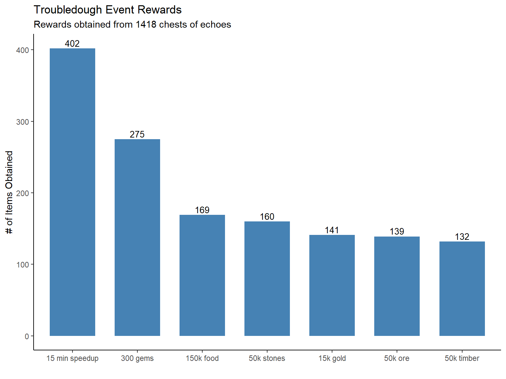

Posted on February 13, 2019
A recent event in the Lords Mobile game (see previous post) was a monster hunting event with a new type of monster: the Troubledough. The event was concurrent with the release of new background music for the game. The Troubledough resembled a cross between a stereotypical pizza maker and a portly violinist. He seemed rather jolly playing his music however we send our heroes out to slash him with a sword and send him back to another dimension. As our reward for this heroic feat, we obtain a “Chest of Echoes” which contains one of seven possible rewards.
The event costs basically nothing except your valuable time to find Troubledoughs when every 3 hours when they appear on the kingdom map and then send your heroes out to slay them. There was no energy cost to hunt (well, 1 energy unit which takes about 1 second to build back). Of the seven possible rewards, 5 rewards were various amount of resources. All resources with the exception of gold are rather easily obtained and the resource amounts offered from the chest were fairly insignificant for my account. One reward was for 15 min of speed-ups. Speed-ups are very important in the game however 15 min is a small amount relative to the typical time required to complete researches (weeks) or build troops (days). The final reward was the real gem, in fact, 300 of them. Gems are flexible currency in the Lords Mobile game and can be used to buy speed-ups, special materials, chests, combat boosts etc. 300 gems is the equivalent of a 3 hour speed-up which is miles better than just 15 min.
So, what kind of drop rate are we to expect for the 300 gems reward from the “Chest of Echoes”? If we assume the same drop-rate for all 7 rewards, the 300 gems would be received about 14.3% of the time. Lords Mobile players however have come to expect a much lower drop-rate for the top item in a chest compared to the lesser items. Many times the drop-rate for the top item is less than 5%. This event was actually the second time the Troubledoughs had appeared and I had remembered receiving a good deal of gems from the previous event (~25,000 gems). I decided to go “all-in” on this event to see how many chests I could acquire over the next few days.
After several days of valiant Troubledough slaying, I was able to collect 1418 chests of echoes. I recorded the rewards as I opened the chests. I can confirm there was one reward per chest. The distribution of rewards is shown in the figure below.

The distribution of rewards did not appear to be uniform. If all rewards were equally likely, each rewards would appear about 203 times. The 15 minute speed-ups showed up about 2 times more often. The highly-desired reward of 300 gems was also received more frequently than one would expect from a uniform distribution of rewards.
The chi-square goodness of fit test is used to compare the observed distribution to an expected distribution in a situation where we have two or more categories in a discrete dataset. In other words, it compares multiple observed proportions to expected probabilities.
Null hypothesis (Ho): There is no significant difference between the observed and the expected value.
Alternative hypothesis (Ha): There is a significant different between the observed and the expected value.
res <- chisq.test(chest_of_echoes$Count, p = rep(1/7, 7))
res##
## Chi-squared test for given probabilities
##
## data: chest_of_echoes$Count
## X-squared = 299.99, df = 6, p-value < 2.2e-16The p-value of the test is less than the significance level alpha = 0.05. We can conclude that the rewards are significantly not uniformly distributed with a p-value of < 2.2e-16.
The actual drop rate % for the 1418 chests was calculated. The drop rates were close to 20% for 300 gems and 30% for the 15 min speed-up. One could assume the rest of the resource awards were equally likely with 10% drop rate.
| Rewards | Count | Actual | Assumed |
|---|---|---|---|
| 300 gems | 275 | 19.4% | 20% |
| 15 min speedup | 402 | 28.3% | 30% |
| 150k food | 169 | 11.9% | 10% |
| 50k stones | 160 | 11.3% | 10% |
| 50k timber | 132 | 9.3% | 10% |
| 50k ore | 139 | 9.8% | 10% |
| 15k gold | 141 | 9.9% | 10% |
Redo the analysis to test the assumed drop rates for the 1418 chest sample.
assumed_drop_rates <- c(0.2, 0.3, 0.1, 0.1, 0.1, 0.1, 0.1)
res <- chisq.test(chest_of_echoes$Count, p = assumed_drop_rates)
res##
## Chi-squared test for given probabilities
##
## data: chest_of_echoes$Count
## X-squared = 9.8385, df = 6, p-value = 0.1316From this sample, we cannot conclude that the drop rates are significantly different from our assumption (p-value > 0.05).
So, there you have it! The drop rate for the 300 gem reward from the chest of echoes was ~20% which was awesome. From the 1418 chests collected during the event, I was able to collect 82,500 gems which is equivalent to about 60 days of speedups! Another 4 days of speed-ups were obtained from the 15 min speed-up items. If this event comes up a third time, be sure to hunt those Troubledoughs!